Chapter Nine
Number Bases
page 126103. In the last chapter we read that Mathematics began with the simple act of counting, and when we count we are recognising two aspects of number. The first is order, the second is group-size. If we speak of three specks of dust and three elephants we imply that each speck could be matched to one elephant, and that both groups could be matched to the ordered jingle we call counting. Whether we say, ‘one, two, three, four, …’ or ‘inter, mitzy, titzy, tool…’* doesn’t matter in the least, so long as the sounds we employ are thought of always in the same order. If I say a triangle has titzy sides my meaning is clear to you if we have agreed on this jingle, because you have a mental picture of a line to match ‘inter’, another to match ‘mitzy’, and another to match ‘titzy’. But this ability to see group-size is limited to quite small collections. If I asked you to draw a polygon with ‘domina’ sides, you would have to count the words to discover that ‘domina’ in the jingle matches seven in ordinary counting. In other words, you would rely on ‘order-counting’ to tell you when the ‘group’ was complete.
* See note at end of chapter.
104. The ability to recognise group-size is variable, but most people find it difficult to recognise at a glance groups composed of more than seven items. You can test this for yourself by taking a handful of coins and attempting to say how many there are without counting them. If we have to estimate large groups it is quite surprising how wildly inaccurate we can be.page 127 If you examine this array of ‘400’ dots you will realise that without counting them you cannot be sure whether there are 400 or not. The group is too large for our minds to comprehend and we have to relate it to number-groups which are familiar through long usage.
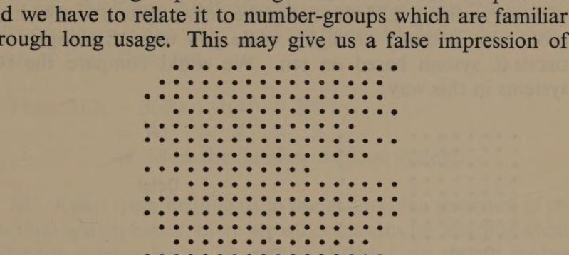
All we really know about 400 is that it is less than 401 and greater than 399, but in itself it is too large for us to recognise. There are some parts of the world where the people would not use a nice tidy number like 400 to describe this group of dots. I did because they can be arranged thus:
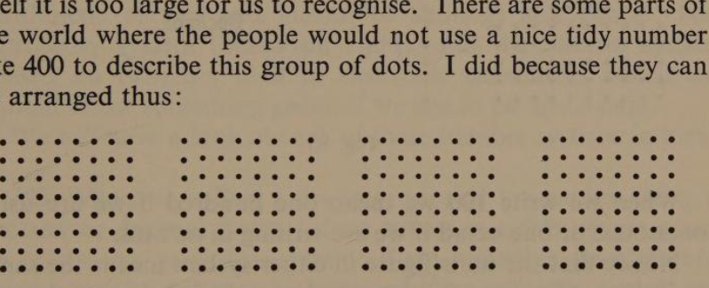
But they could be arranged in other ways: some people would say there were 256 dots and ‘prove’ it by arranging them in this way:
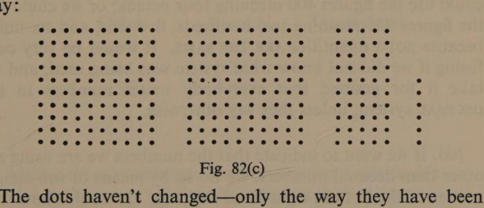
The dots haven’t changed—only the way they have been arranged.
105. page 128 You will have realised that I tried to play a trick on you in the last section. When I persuaded you there were 400 dots I was attempting to make you accept a different number-system without realising it. I was using the octal system in which the group-size is based on eight, while you were thinking in the decimal system based on ten. We could compare the two systems in this way:
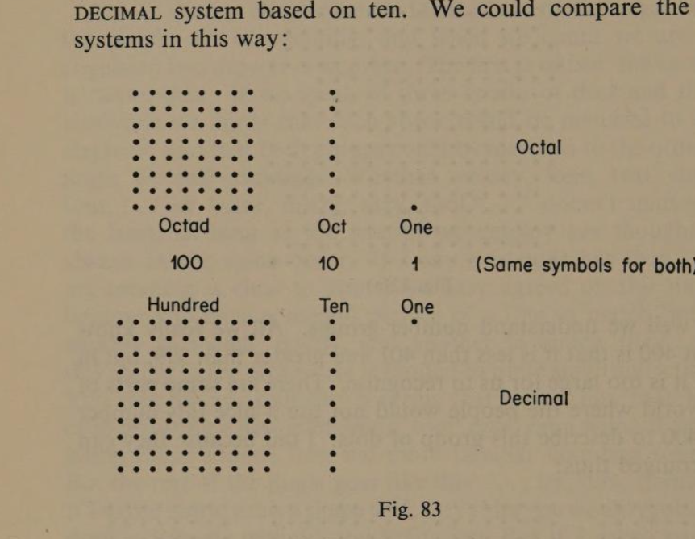
When we write 100 we mean one hundred if we are using decimals, or one octad if we are writing in octals. Notice that this figure in either system means the same, as it does in any number system, because when we count we are describing groups made up of ones. It is only when we are thinking in groups that the figures have different meanings. It would be very confusing if we did not know what system was being used, and we take it for granted that everybody writes numbers in the decimal system, unless they say otherwise.
106. If we want to indicate that the numbers we are using are other than decimal numbers, we do so by means of sub-scripts written at the bottom right-hand side, e.g. 12₈ would show that the figures 1 2 do not stand for the decimal number twelve, butpage 129 for two units and one eight. Thus, 12₈ = 10 in the usual notation.
Here is another example: 312₄ is written ‘to the base 4’. That is to say, the figure 2 tells us there are two ‘one’s’, the figure 1 tells us there is one ‘four’, and the figure 3 tells us there are three ‘four × four’ that is sixteen.
Thus, 312₄ = 3(4²) + 1(4¹) + 2(4⁰)
= 48 + 4 + 2
= 54 in the familiar decimal system.
107. Apart from helping us to understand the structure of the decimal system, there are other reasons for learning about different number bases. Some people think we should replace our ten-based system by the duodecimal system based on twelve. One of their reasons is that the more useful numbers are those with many factors. Ten has only two factors, 2 and 5, but twelve has twice as many, 2, 3, 4, and 6. Having so many factors would make many calculations easier, particularly the Arithmetic of feet and inches, or shillings and pence. The octonary system (based on eight), and the binary system (based on two) are used in electronic calculators which we should know something about if we are to be up-to-date. We will have a look at each of these number systems in turn.
108. When we collect units in groups of ten we are using a denary or decimal system; if we collect in eights we are using an octonary or octal system; if we collect in twos we are using a binary or binal system; and to calculate in any number system you have only to remember to collect the items in the appropriate group-sizes. Here are some examples:
| Octal | Decimal | Duodecimal |
|---|---|---|
| 17 | 15 | 13 |
| 44 | 36 | 30 |
| 52 | 42 | 36 |
| 135 | 93 | 79 |
All these ‘sums’ represent exactly the same calculation. Line by line they refer to the same number of items: One eight + seven = one ten + five = one twelve + three.page 130 Four eights + four = three tens + six = three twelves + nought. Five eights + two = four tens + two = three twelves + six. If you study the totals in the same way you will see that they each represent the same final quantity.
109. In octonary you ‘carry’ one every time you make a group of eight; in denary you ‘carry’ one every time you make a group of ten; and in a duodecimal system each time you collect twelve. But there is one race of people who use different base groups in each column. They are the B’swamis. Here are some B’swami sums. Can you deduce their number bases?
| 128 |
| 314 |
| 227 |
| 807 |
| 195 |
| 286 |
| 354 |
| 733 |
| 196 |
| 385 |
| 219 |
| 754 |
In the examples we shall do you may rely on the fact that the whole calculation will be done in the same base throughout, so that even if it is unfamiliar it will at least be consistent.
110. In ten-based grouping there is no need of a digit greater than nine. The familiar symbols are: 1, 2, 3, 4, 5, 6, 7, 8, 9, and a zero symbol which is 0. Thus, to write numbers in octals only seven digits are required with an additional zero symbol. Counting is:
| ONE | TWO | THREE | FOUR | FIVE | SIX | SEVEN | OCT | OCTY-ONE … |
| 1 | 2 | 3 | 4 | 5 | 6 | 7 | 10 | 11 |
This means that in the binary system we require only the symbol 1 as well as the zero symbol. Thus, the above sequence written in Binary would be:
1 10 11 100 101 110 111 1000 1001
So long as the base required is less than the ten-base, the single digits can be selected from those we know well. But if we decide to use a base grouping greater than ten we have to inventpage 131 single digit symbols to fill the gap between 9 and the base we are using. Thus, in Duodecimals I write:
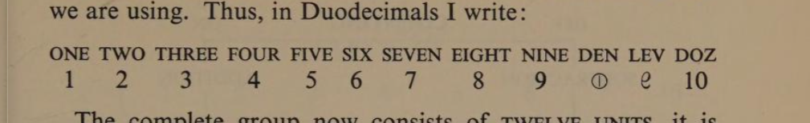
The complete group now consists of twelve units, it is indicated by 10 and called DOZ. I have chosen to call the number after nine, DEN (☉); and the next number I call LEV (ℇ). Both the names and the symbols I have invented remind you of the numbers they replace, and at the same time they are sufficiently different to avoid confusion. You may be saying it would have been easier to keep on adding to the difficulties in this way! This is precisely the attitude men had towards the Arabic numerals when they began to replace the Roman numerals. What I hope, however, is that after trying some simple calculations with Duodecimal numerals you will understand better the processes of Ordinary Arithmetic.
111. The recognised processes of Arithmetic are: addition, subtraction, multiplication, and division. Each is a variation of the fundamental process of counting.
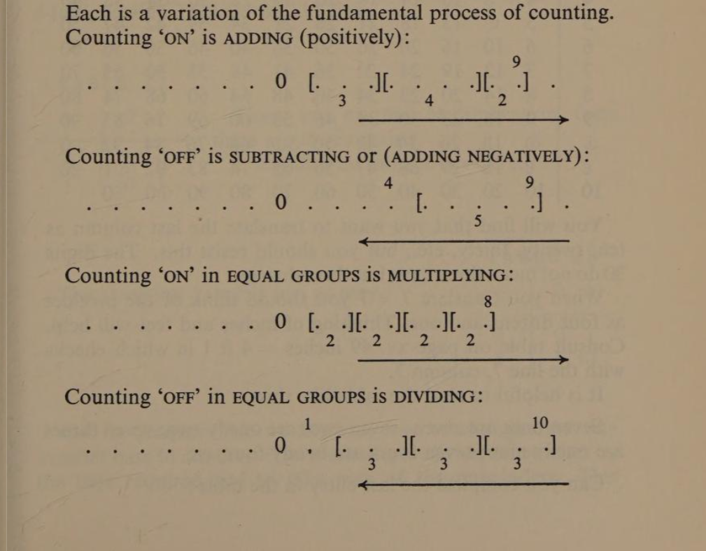
- Counting ‘ON’ is ADDING (positively).
- Counting ‘OFF’ is SUBTRACTING (or ADDING NEGATIVELY).
- Counting ‘ON’ in EQUAL GROUPS is MULTIPLYING.
- Counting ‘OFF’ in EQUAL GROUPS is DIVIDING.
page 132 The ‘Family of Processes’ is related in this way: OFF ← counting → ON; Subtraction / Addition; Division / Multiplication. Addition and Subtraction in any number base are easy, so long as we remember how many units make a complete group. Multiplication and Division can’t be done unless we memorise Group Tables, or have them written out to refer to. You will find the Tables in the next two sections useful when attempting exercises in Duodecimals, Octals, or Binals.
112. Duodecimal Group Table. Parts of this table will be familiar to you but some will appear very strange.
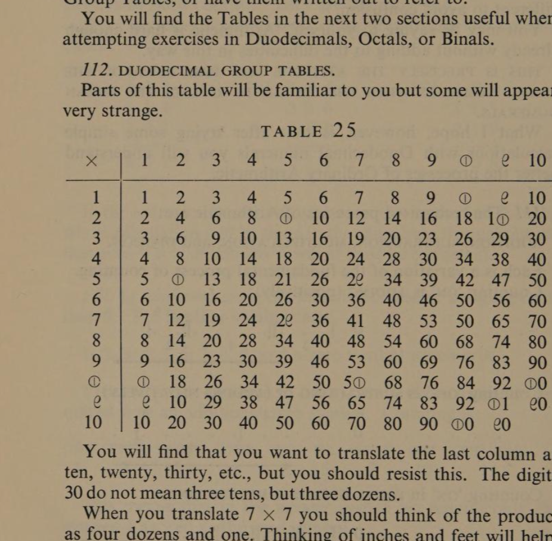
You will find that you want to translate the last column as ten, twenty, thirty, etc., but you should resist this. The digits 30 do not mean three tens, but three dozens. When you translate 7 × 7 you should think of the product as four dozens and one. Thinking of inches and feet will help: 49 inches = 4 ft 1 in which checks with the line 7, column 7. It is helpful to read the table like this: Seven ones are seven; seven twos are onedy-two; seven threes are onedy-nine; seven fours are twodry-four, etc. Can you complete the last entry in the table?
113. page 133 Octal Group Table.
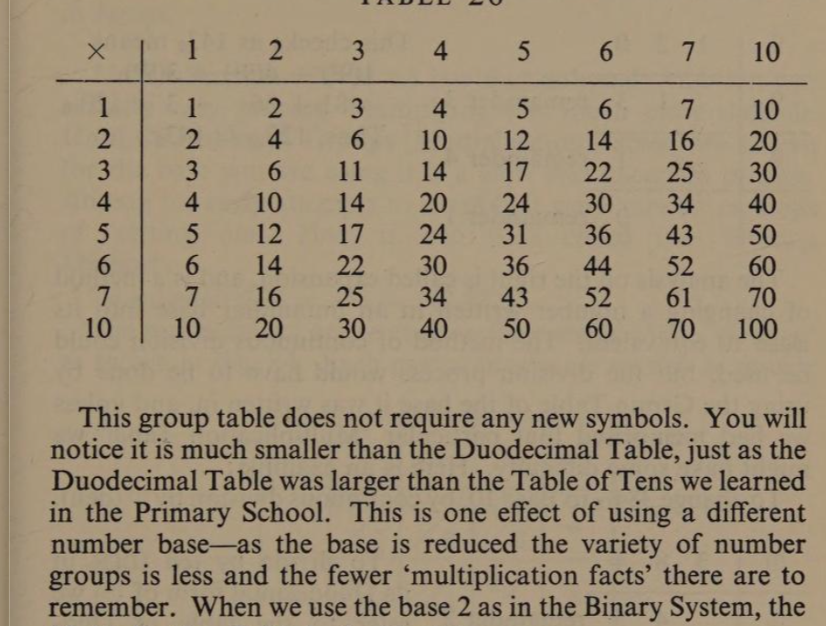
This group table does not require any new symbols. You will notice it is much smaller than the Duodecimal Table, just as the Duodecimal Table is larger than the Table of Tens we learned in the Primary School. This is one effect of using a different number base—as the base is reduced the variety of number groups is less and the fewer ‘multiplication facts’ there are to remember. When we use the base 2 in the Binary System, the Multiplication Table looks like this:
| × | 0 | 1 |
|---|---|---|
| 0 | 0 | 0 |
| 1 | 0 | 1 |
| + | 0 | 1 |
|---|---|---|
| 0 | 0 | 1 |
| 1 | 1 | 10 |
These are all the Multiplication facts there are to remember. It couldn’t be simpler—could it? The Addition Table is just as easy.
114. In Chapter Two we first saw how to change from one number base to another. The method is to divide the number by the base required and to take note of the remainders.page 134 This process is continued until the number is exhausted. Here is an example. To write 120 (Base 10) in Base 9:
| 9)120 | |
| 9)13 | remainder 3 |
| 9)1 | remainder 4 |
| 0 | remainder 1 |
The analysis on the right means 1(9²) + 4(9¹) + 3(9⁰) = 81 + 36 + 3 = 120₁₀. Thus, 120₁₀ = 143₉. This analysis is called expansion, and is a method of changing a number written in an unfamiliar base into its Base 10 equivalent. Here is an example. To change 384₁₂ to Base 10 by continuous division. To divide by ten (DEN in its Duodecimal form of ☉) we refer to the table of Duodecimal Groups in Section 112.
| ☉)384 | |
| ☉)45 | remainder 2 |
| ☉)5 | remainder 3 |
| 0 | remainder 5 |
The result shows that 384₁₂ = 532₁₀, and we can check this by the method of expansion as follows:
384₁₂ = 3(12²) + 8(12¹) + 4(12⁰)
= 3 × 144 + 8 × 12 + 4 × 1
= 432 + 96 + 4
= 532.
115. Ever since number was invented men have tried to find ways of reducing the drudgery and uncertainty of calculation. The word itself comes from the Latin ‘calculus’, meaning a small stone or pebble, and refers to the use of pebbles or counters. When we speak of the ‘counter’ in a shop we recall its original chequed surface covered with squares to make the counting of money easier. The title of the British Minister who is responsiblepage 135 for the nation’s money comes from the same source. We have already heard of the Abacus or bead-frame which was one of the earliest calculating devices and which is still in common use in Japan.
116. In Sections 112–14 we saw that although Addition was a fairly easy process, Multiplying was much more difficult. Until the Tables of Groups [Multiplication Tables] are known for the base you are using it is a slow and uncertain process. Among the early attempts to simplify it were various methods of ‘setting out’. Here is one such called the ‘Grating Method’. To calculate 324 × 458 = 148,392. The two numbers are written on the outside of the ‘Grating’ as shown in Fig. 84. Each partial product is written as found:
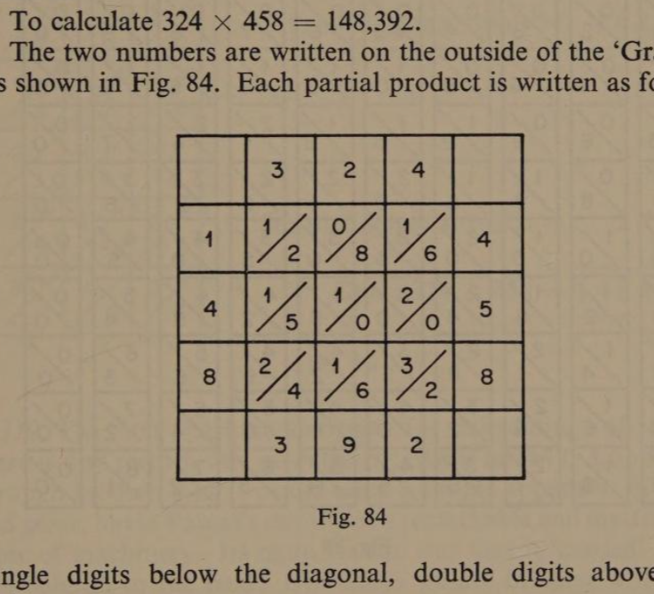
single digits below the diagonal, double digits above and below. ‘Carrying’ is required only during the final addition which is done along the diagonals. Examples in old manuscripts were lavishly decorated—as if the calculator were so proud of his skill he felt it deserved framing.
117. In the seventeenth century, John Napier, a Scotsman, applied the ‘grating’ method in a device which has become known as ‘Napier’s Bones’. This consists of single strips on which are engraved the products of the multiplication tables.page 136 A set of these, made of ivory and enclosed in a leather case, can be seen in the Science Museum in London. Lord John Napier is most famous for his invention of logarithms. There has probably been no other single contribution to the simplification of calculation so important as logarithms, in the preparation of which Napier spent over fourteen years. By means of them you can do calculations which were beyond the ablest mathematicians three hundred years ago.
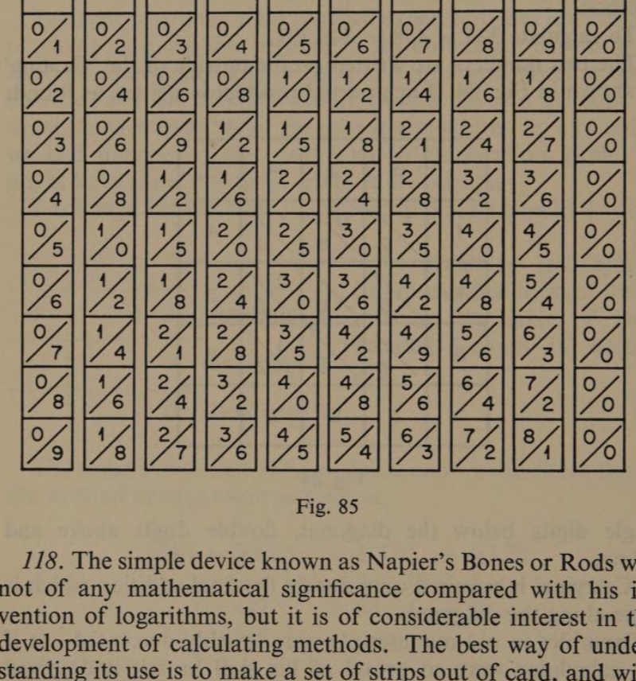
118. The simple device known as Napier’s Bones or Rods was not of any mathematical significance compared with his invention of logarithms, but it is of considerable interest in the development of calculating methods. The best way of understanding its use is to make a set of strips out of card, and with them do some simple calculations. You can see the connection with the grating method in the example below. This is the same calculation we did in Section 116. To multiply 324 by 458, you select the 3 rod, 2 rod, 2 strip, and 4 strip, and lay them side by side as shown. Next, you make a note of the diagonal totals in the 4th, 5th, and 8th rows to correspond with the multiplier 458.page 137
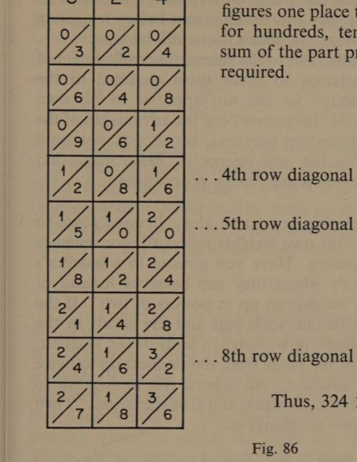
Care must be taken to ‘shift’ the figures one place to the right to allow for hundreds, tens, and units. The sum of the part products is the result required.
… 4th row diagonal totals = 1296
… 5th row diagonal totals = 1620
… 8th row diagonal totals = 2592
Thus, 324 × 458 = 148392.
119. The first machine designed for calculating, of which there is any record, was invented by Pascal in 1642. Looked at through modern eyes it would seem a simple apparatus of cogs and gears, but in Pascal’s day it was a remarkable and mysterious piece of machinery. Its main feature was the way it ‘carried’ from one column to the next. Nowadays we are familiar with this sort of mechanism in milometers and turnstile counters and dozens of similar applications. Another famous mathematician, Leibniz, about 1671 invented a more versatile machine, which is supposed to have been capable of counting, addition, subtraction, multiplication, and division.
On most shop counters today you will find calculating machines of one sort or another. The more expensive kind, like Pascal’s, are simply adders, and either are hand-operated, or electrically operated. The forerunner of most modern calculating machines was that of Charles Babbage (1792–1871). His ‘calculating engine’ was designed topage 138 perform most elaborate numerical processes, but it was never completed. It is recorded that the British Government spent over one hundred thousand pounds on its development before relegating it to the Kensington Museum, where it can still be seen.
One of the greatest obstacles to the successful development of computers was the attempt to make them conform to the Denary system. Although he did not apply it to his own machine, Leibniz (1646–1716) pointed out the advantages of the Binary system of representing numbers, but it was not until between 1940–50, using the new science of Electronics, that Binary Computers became a practicable proposition.
120. The Binary system is not a new idea. It was known to the Ancient Chinese. Our own weights reflect the convenience of this method of counting. Have you noticed in a butcher’s shop or a greengrocer’s where they use balance instead of spring scales, that the weights go up in powers of two? If the weights are to be put in one scale-pan and the goods in the other, all intermediate weights in units of the smallest, may be determined over the range from the smallest up to twice the biggest minus the smallest. We express this in Algebra to make it clearer. Let s be the smallest, and L the largest. Then the full range of possible weighings is:
From s to [2L − s]
We will test this. If our weights are 1 lb, 2 lb, 4 lb, 8 lb, and 16 lb we should be able to weigh up to 31 lb in units of 1 lb.
To weigh eleven pounds 8 + 2 + 1 = 11.
To weigh twenty-seven pounds 16 + 8 + 2 + 1 = 27.
To weigh thirty-one pounds all the weights = 31.
It is interesting to note that a full range of brass weights begins at ½ oz, and each weight after is doubled up to 4 lb. The next is not 8 lb but 7 lb, after which it again becomes binary in form because as you know it continues:
| 14 lb | = 1 stone |
| 28 lb | = 1 quarter |
| 56 lb | = 1 half cwt |
| 112 lb | = 1 cwt |
It is not certain why the pattern changes at 7 lb, but if it had not, the standard cwt would have been 128 lb.
121. page 139 Just as with a set of weights in which each is twice as big as the one before it, we can weigh any amount up to twice the largest minus one unit, so with number columns arranged to accommodate powers of two we can represent any number over a similar range using only the symbols 1 and 0.
| 2⁸ | 2⁷ | 2⁶ | 2⁵ | 2⁴ | 2³ | 2² | 2¹ | 2⁰ |
| 256 | 128 | 64 | 32 | 16 | 8 | 4 | 2 | 1 |
Previously we have been shown how to translate a Denary number into Binary by successive division. Another method is to select from the columns shown above the parts necessary (beginning with the largest) to make up the number we require. If we wished to convert 67₁₀ to Binary we could say it is made up of 64 + 2 + 1 and by selecting those columns get 1000011.
122. At once we can see a disadvantage of Binary numbers for ordinary purposes. Besides taking up a lot of room they take longer to write. Neither of these bother an electronic computer because the digits are transformed into pulses of electricity which travel so fast that the length of the number just doesn’t matter. One part of the computer is used as a number ‘store’ in which the digits are ‘spots’ of magnetism. These are sometimes translated into Octonary because it is more compact and is easily translated into Binary. 2³ = 8¹ which means that every 3 columns of Binary are equivalent to 1 column of Octonary. Thus, if we group the Binary number of the last paragraph into triads we get 001,000,011 [the two noughts in front are only put in to complete the first triad]—then by inspection we can translate it into Octonary:
1 0 3
This means 1(8²) + 0(8¹) + 3(8⁰) = 64 + 0 + 3 = 67.
Ninth Review
R.103. (a) Name two aspects of number.
(b) Which do we use when we count?
(c) If I do not know how many there are in a certain collection, how can I find out?page 140
(d) When I have done this what will I have established in respect of the collection, ORDER or GROUP-SIZE?
(e) Using the jingle in Section 103 say how many sides an octagon has.
R.104. (a) Can you recognise the size of ANY group, however big?
(b) What is the approximate limit suggested?
(c) It is stated that our knowledge of a number like 648 is limited. What are the limits referred to?
(d) Do we appreciate order or group-size in a large number?
(e) Using the Denary system say how many dots there were.
(f) Express this number in the Octal system.
(g) Look at these diagrams and WITHOUT counting say how many dots each has.
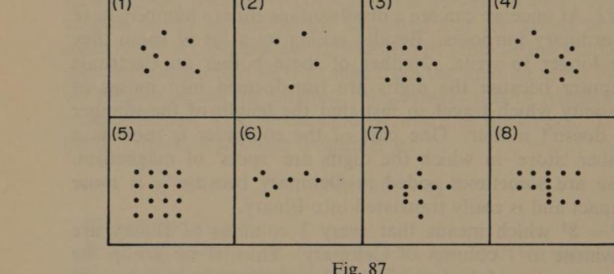
(h) What sometimes helps to make large groups more easily recognisable?
R.105. (a) What is the group-size on which numbers are normally based?
(b) The numbers we normally use are called Decimals. Give another name for this system.
(c) What is the base of the Octal system?
(d) If a whole number is written to the base 5, what will the extreme right-hand figure represent?
(e) What is represented by the right-hand digit of whole numbers in any system?
(f) If abc represents a number written to base 6, what group-size would the number a refer to?
R.106. page 141 (a) If we want to indicate the base we are using how do we show it?
(b) Show that these numbers are written to the bases stated: 326 (base 8); 351 (base 6); 10010 (base 2).
(c) What is wrong with this number? 356₄.
R.107. (a) Give two reasons why learning about different number bases is worth while.
(b) What makes a number specially useful?
R.108. (a) What must be remembered when adding in an unfamiliar base?
(b) Explain how the totals shown in the OCTAL and the DUODECIMAL sums in Section 108 each equal 93 in DENARY.
(c) In each of the following sums say which base is being used:
| 13 |
| 24 |
| 6 |
| 46 |
| 23 |
| 10 |
| 34 |
| 122 |
| 361 |
| 73 |
| 245 |
| 700 |
R.109. Have another look at the B’swami sums. Reading from right to left the variable bases were: [A] 12 and 3; [B] 12 and 20; [C] 16 and 14. You have probably guessed that we are the race of people referred to. All these examples were taken from an English Arithmetic Book (see tables on page xv). B’SWAMI is my contraction of British Standard Weights and Measures (Imperial) and the sums will look familiar if I write them thus:
| 1 2 8 |
| 3 1 4 |
| 2 2 7 |
| 8 0 7 |
| 1 9 5 |
| 2 8 6 |
| 3 5 4 |
| 7 3 3 |
| 1 9 6 |
| 3 8 5 |
| 2 1 9 |
| 7 5 4 |
page 142 (a) What is a complete group when ADDING inches?
(b) What is a complete group when ADDING ounces?
(c) What is a complete group when ADDING minutes?
(d) What base is used when ADDING feet?
(e) What base is used when ADDING pence?
(f) What base is used when SUBTRACTING inches from feet?
(g) What base is used when changing tons to stones?
(h) What base is used when changing square feet to square inches?
(i) What base is used when changing square feet to square yards?
(j) What base is used when converting centimetres to metres?
(k) Why should arithmetic in unfamiliar bases be easier than B’swami?
R.110. (a) Translate this into modern notation: CCCXXIV.
(b) The same number is repeated three times below. In each case state the value of the numeral in brackets.
(i) C(C)CXXIV (C) =
(ii) CC(C)XXIV (C) =
(iii) CCCXX(I)V (I) =
(c) Complete this statement: In Roman numbers the value of a particular numeral does not change with its …… .
(d) Here is a number in Denary … 30353. In each of the following cases give the value represented by the figure in brackets.
(i) 3 0(3)5 3 (3) =
(ii) (3)0 3 5 3 (3) =
(iii) 3 0 3 5(3) (3) =
(e) Complete this statement: In modern notation digits have [one/two] values. One is indicated by the [symbol; +; −; brackets], and the other is indicated by its [shape; size; position].
(f) In the diagram on page 143 there are patterns of dots and under each a ‘base’ number. Copy it and in the bottom cell write the symbols you would use to represent the number of dots in the base indicated.
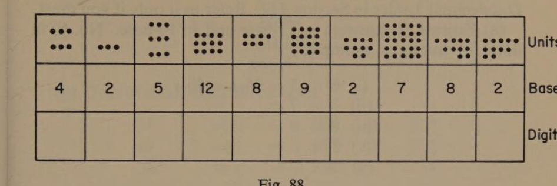
R.111. (a) What is called the fundamental process of Arithmetic?
(b) What definition is given of multiplying?
(c) What process is equivalent to the continuous subtraction of equal groups?
(d) In the diagrammatic illustrations of arithmetical processes in Section 111, four ‘sums’ are presented. The first illustrates: 0 + 3 + 4 + 2 = 9. Write the other three in the usual form.
(e) In the illustration of ‘counting on’, or adding positively, an arrow is shown pointing in this direction →. In the next illustration showing the subtraction of a positive number the arrow points this way ←. Which way would the arrow point to illustrate the SUBTRACTION OF A NEGATIVE NUMBER?
(f) Complete this statement: ‘When thinking of numbers as an ordered array with negatives to the left of zero and positives to the right, adding is a movement in the → direction when the added number is ……, and in the ← direction when the added number is …… .’
(g) Complete this statement: Subtraction of a positive number may be thought of as a rotation of direction from → to ←, but the subtraction of a negative number causes a …… rotation.
(h) Complete this statement: Subtracting a negative number has the same effect as …… .
(i) Give the results of:
(i) 0 + 8 − 5 = (ii) 0 + 8 − (+5) =
(iii) 0 + 8 + (−5) = (iv) 0 + 8 − (−5) =
(v) 0 − 8 + (−5) = (vi) 0 − 8 − (−5) =
R.112. page 144 Try to answer these questions without consulting the Duodecimal Tables in Section 112. Refer to it only if you must.
(a) Express the answers in 12-base and in 10-base. No. (i) is done for you as an example.
(i) 6 × 5 = 26 (12-base) = 30 (10-base)
(ii) 3 × 7 = (iii) 9 × 8 = (iv) 7 × ☉ = (v) 9 × ☉ =
(b) In the Denary Table there are many interesting patterns, e.g. the products of 5 have as their last digit either 0 or 5. What corresponds to this in the Duodecimal Tables?
(c) Write out that sequence.
(d) Write out the 9 sequence in the Denary Table.
(e) What do you notice about the digits of each product?
(f) What happens after 45?
(g) What Duodecimal sequence has a similar pattern?
(h) Write out that sequence.
(i) After which product does reversal of the digits start?
(j) Is there one sequence in the Denary Table in which BOTH digits in each product are the same. Write it out.
(k) Where would you expect to find a similar sequence in the Duodecimal Table?
(l) Is 2 an odd or an even number?
On the next two pages you will find some calculations using the Duodecimal Tables. Try to complete them without consulting the Tables. Remember—‘carry’ and ‘borrow’ in groups of twelve not ten.
(m) Duodecimal additions.
| 336 |
| 23 |
| 248 |
| 4ℇ9 |
| 32 |
| 35 |
| 7☉6 |
| 138 |
| 18☉ |
| 317 |
| ☉3 |
| 2 |
(n) Duodecimal subtractions.
| 362 |
| 14 |
| 2☉5 |
| 3☉ |
| 59☉ |
| ☉ℇ |
| 483 |
| 394 |
| ☉☉☉ |
| ☉☉ℇ |
page 145 (o) Translate these numbers from Duodecimals into DENARY: (i) 42 (ii) 6☉0 (iii) 31·3.
(p) Duodecimal multiplications (e.g. 19 × 32, ☉ × 36☉, and similar products set out in the original).
(q) Duodecimal divisions: (i) 8)394 (ii) ☉)☉3☉ (iii) 7)6781 (iv) 23)5716.
In the DENARY system this last example would be 27)9,666 and would yield the result 358. This is precisely the same as 25☉ in Duodecimal which translated = 358₁₀. 2 gross + 5 dozen + ten = 358₁₀.
R.113. (a) Find the following products, giving the result in OCTONARY and DENARY, as in the first example.
(i) 5 × 4 = 24₈ = 20₁₀
(ii) 7 × 5 = (iii) 2 × 3 = (iv) 4 × 5 = (v) 7 × 9 =
(b) Complete this statement: As the base number is reduced the number of multiplication facts which have to be remembered gets ……, while the amount of room the number takes up gets …… .
(c) Do these Binary calculations:
(i) 0 + 1 = (ii) 0 + 0 = (iii) 1 + 1 = (iv) 1 + 0 =
(v) 1 + 11 = (vi) 11 + 10 + 1 = (vii) 1 × 0 = (viii) 1 × 1 =
(ix) 0 × 0 = (x) 1 × 1 =
R.114. page 146 (Computer additions, subtractions and multiplications in Binary — sets of column sums to be worked, e.g. 101 + 10, 1011 × 11, etc.)
(a) What two methods have been suggested for changing the base of a number?
(b) Find the base 10 equivalent of 372₈ by expansion.
(c) Change 5,836₁₀ to its equivalent in base 7 by the method of continuous division.
(d) Change 423₈ to base 6 by the method of continuous division. (Hint: Use the Octal Table in Section 113.)
(e) Check (d) by the method of expansion.
R.115. (a) From what Latin word is the word ‘calculation’ derived?
(b) What did the Latin word mean?
(c) What is the appearance of ‘checked’ material?
(d) What game is played on a chequer board?
(e) What is the title of the British Minister responsible for the National Budget?
(f) Why is the serving table in a shop called a counter?
(g) What is the proper name of the bead-frame used as a calculating device?
(h) In what country is it still used?
R.116. (a) What must be memorised to make multiplication and division easier?
(b) How did the ‘grating’ method assist multiplying?
(c) What mechanical device does it suggest?
R.117. page 148 (a) What was the device known as Napier’s Bones used for?
(b) What important contribution did Lord John Napier make to Mathematics?
(c) How long ago did he live?
(d) Where would you go to see a set of Napier’s Rods?
R.118. (a) What strips from Napier’s Rods would you select in order to multiply 4872 × 609?
(b) Which would you select to multiply 6009 × 4872?
(c) To multiply 4872 × 3050, how many actual multiplication numbers do you need?
(d) Which strips would you select?
(e) If I used ONLY the 2-rod and the 7-rod to multiply 2007 by 56893, which rows would I have to look up?
(f) How many additions would there be?
(g) How must the part products be arranged?
R.119. (a) Who is credited with inventing the first calculating machine?
(b) What other contribution to Mathematics of his have we read of in this book?
(c) What is the name of the mathematician who invented a calculating machine in 1671?
(d) What operations could it perform?
(e) What is the name of the English mathematician who invented the ‘analytical’ engine just over a hundred years ago?
(f) Is this machine still in existence?
(g) Where can it be seen?
(h) What hindered the development of a really useful computer?
(i) Which mathematician stressed the importance of the Binary system?
(j) When were modern-type computers first developed?
(k) Instead of being mechanically operated, on what branch of science are they based?
(l) Here is a list of calculating aids. Rewrite it putting the items in chronological order of their invention or use.
Babbage’s Analytical Engine Napier’s Rods Electronic Computers Fingers Cash Registers Pebbles The Abacus Arabic Numerals Logarithms Pascal’s Machine
R.120. page 149 (a) One example of the use of a Binary system is in the British System of Weights. Select the least number of weights with which to weigh: (i) 5 lb. (ii) 20 lb. (iii) 10 lb. (iv) 92 lb. (v) 77 lb. (vi) 34 lb.
(b) If BOTH pans could be used for putting the weights on how could the weights be graduated?
R.121. (a) Refer to the arrangement of powers of 2 in order to do these translations.
DENARY into BINARY:
(i) 260 = (ii) 9 = (iii) 30 = (iv) 190 = (v) 49 =
(vi) 73 = (vii) 255 = (viii) 5 = (ix) 63 = (x) 511 =
BINARY into DENARY:
(xi) 1101 = (xii) 10010 = (xiii) 1000001 = (xiv) 111111 = (xv) 101010 =
R.122. (a) To translate Octonary into Binary you should remember that every Octal digit occupies three places when put into Binary.
OCTONARY into BINARY:
(i) 23 = (ii) 156 = (iii) 77 = (iv) 52 = (v) 333 =
BINARY into OCTONARY:
(i) 110 = (ii) 1010 = (iii) 111011011 = (iv) 100011 = (v) 11101011 =
Note: The jingle referred to at the beginning of this chapter on page 126 is a traditional English counting rhyme. It appears in the Oxford Nursery Rhyme Book by Iona and Peter Opie (Oxford University Press). The whole rhyme runs as follows: ‘Inter, mitzy, titzy, tool, Ira, dira, domino, Oker, poker, dominoker, Out goes you.’